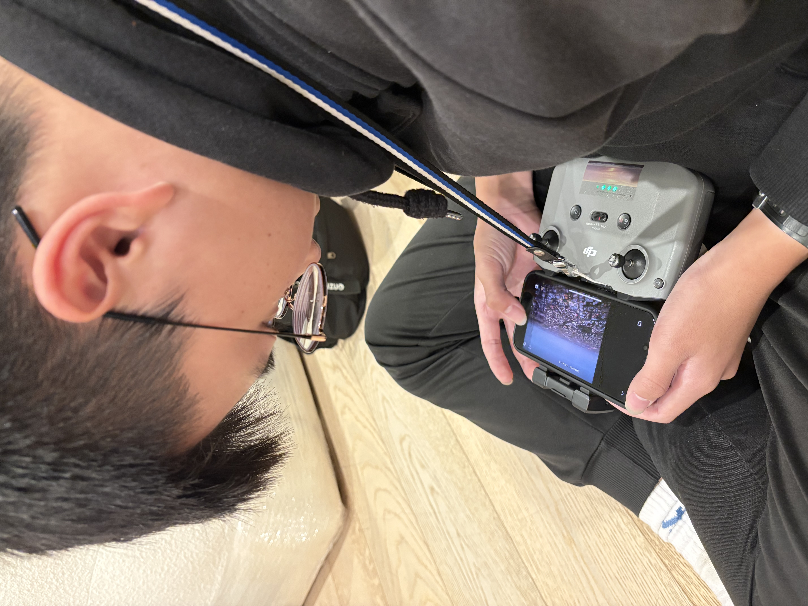
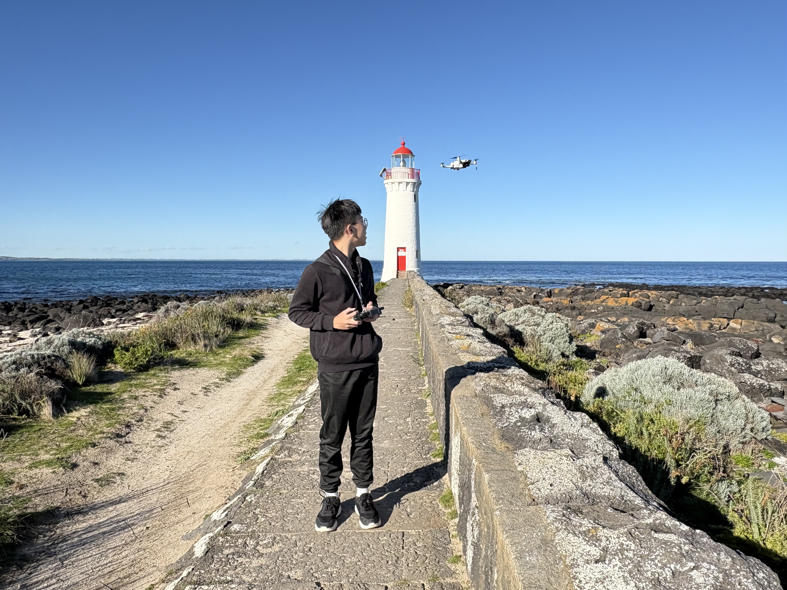
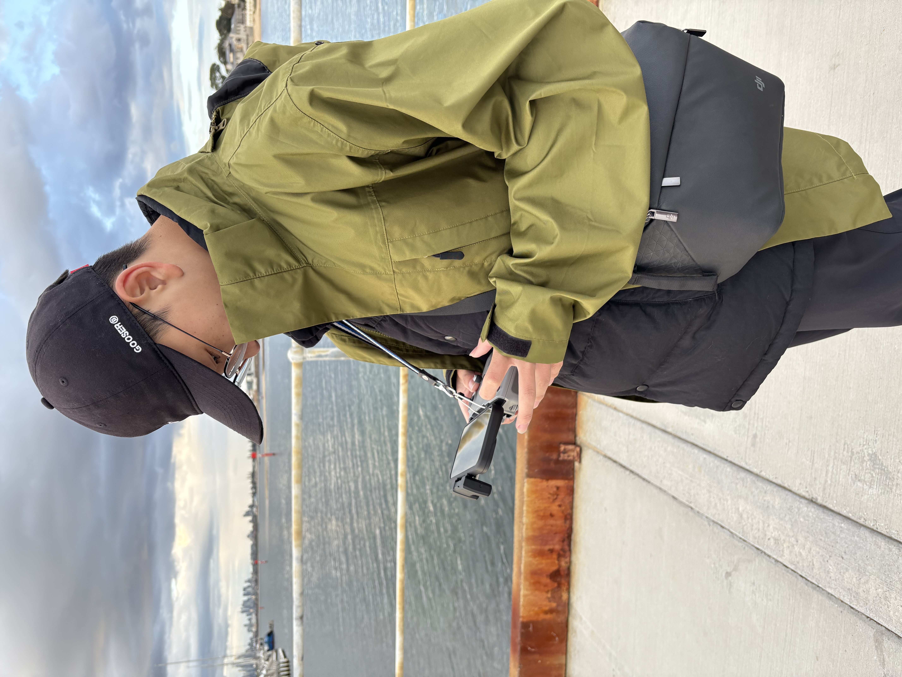
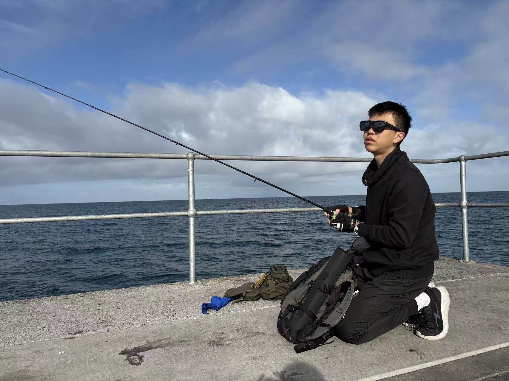
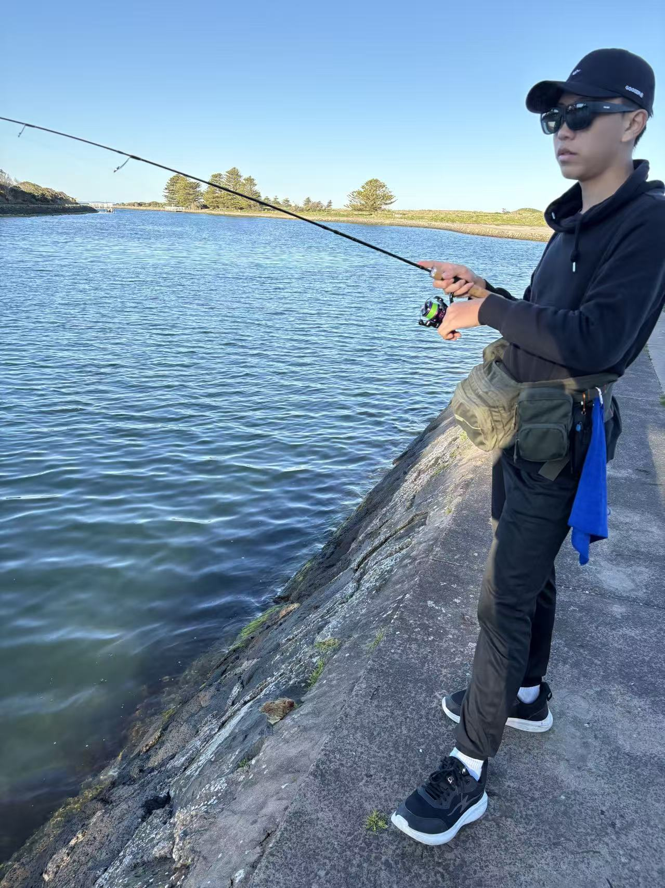
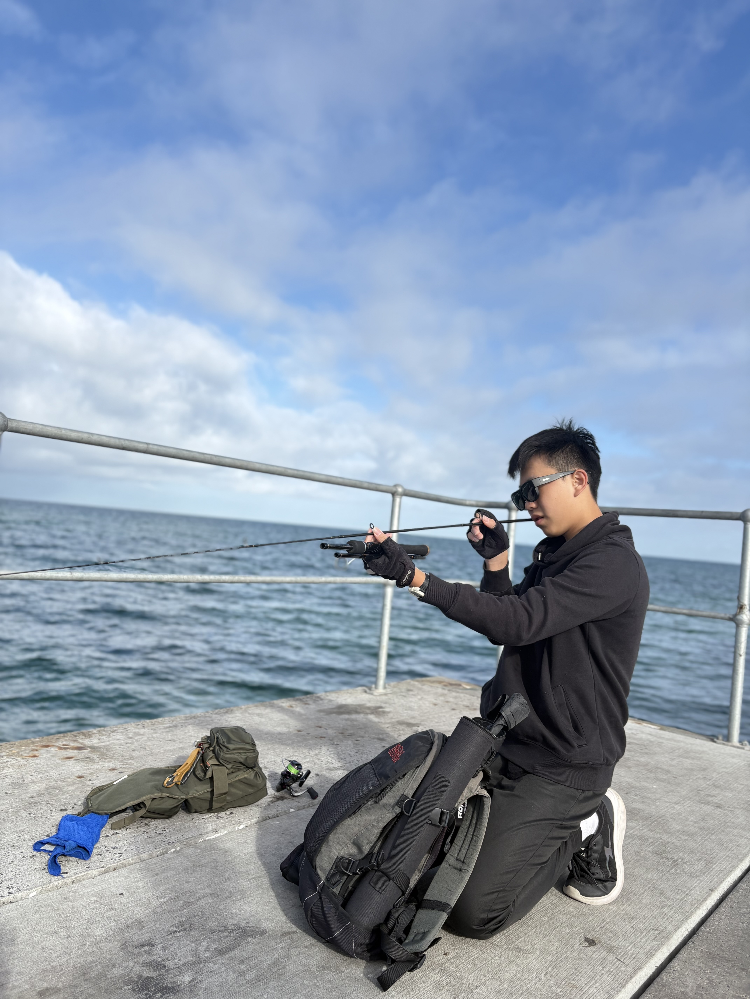
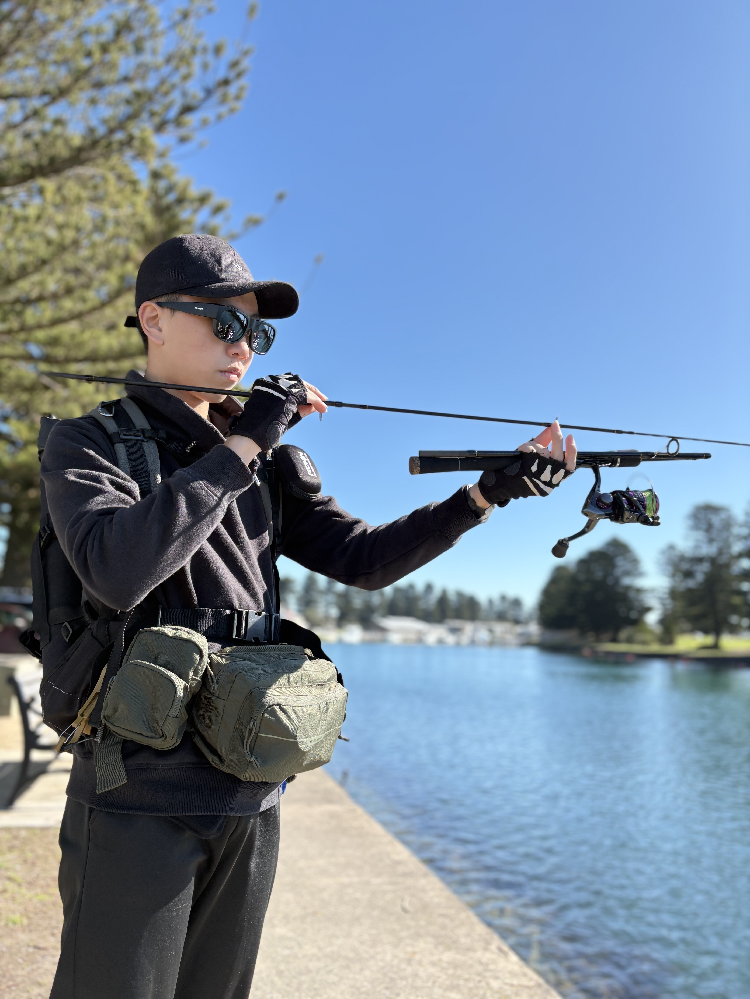

關於我
這裡寫自我介紹與生涯動機：為什麼選擇機械／電子這個方向、印象最深的一堂課或一次實作經驗、未來想往哪個領域發展（例如機電整合、自動化控制、精密加工）。
建議用一個具體事件開頭，而不是空泛的形容詞。例如描述第一次操作車床、第一次讓電路板成功動作的當下感受，再帶到這件事如何影響你後續的學習選擇。
快速資訊
- 科別：機械加工科
- 已取得證照：電子技術士、機械技術士
- 擅長工具：待填（如 車床／銑床／三用電表）
- 生涯方向：待填
作品集
作品名稱待填
一到兩句描述這個作品是什麼、為什麼做。點進去可連結完整報告（製作過程、遇到的問題、心得）。
作品名稱待填
一到兩句描述這個電子作品的功能與設計重點。
作品名稱待填
可持續新增卡片，複製這個區塊即可。
證照與檢定
電子
電子 技術士證照
2025 年 6 月取得工業電子丙級技術士證，寫下準備過程、練習時最卡關的項目、如何克服，以及考取後對後續學習的影響。
 工業電子丙級技術士證.jpg)
機械
機械 技術士證照
同上，寫下這張證照的準備歷程與心得，並嘗試連結到機械加工作品，形成完整的學習脈絡。
志工服務與活動紀錄
以下依服務日期整理校內、校外志工與攝影活動紀錄，並直接展示已取得的服務證明書或相關文件照片。
童樂奇遇冒險志工日
參與校外志工活動，協助活動進行與服務工作，培養與不同對象溝通及合作的能力。
 童樂奇遇冒險 9H 志工日證書.png)
聖愛山莊淨山公益服務
參與淨山行動，實際投入環境服務，從行動中理解維護自然環境與公共責任的重要性。
 聖愛山莊淨山 4H 公益服務志工證明.jpg)
淨灘志工服務
參與淨灘志工服務，協助清理海岸環境並與團隊分工合作，持續累積公共服務經驗。
 淨灘志工服務證明(4H).jpg)
公務團隊攝影組員
擔任公務團隊攝影組員，協助記錄學校活動與比賽過程，整理影像資料並支援活動成果保存；因認真負責表現優異而取得服務證明書。
 公務團隊-攝影組員 認真負責表現優異(服務證明書).jpg)
攝影社文書股長
擔任攝影社文書股長，協助社團資料整理與活動紀錄，培養行政組織、溝通協調及影像紀錄能力；因認真負責表現優異而取得服務證明書。
 攝影社文書股長 認真負責表現優異(服務證明書).jpg)
新生始業輔導營活動
參與學校新生始業輔導營，協助活動執行與新生引導，透過團隊服務學習承擔責任並支援校內大型活動。
 -新生始業輔導營活動(12H服務證明書).jpg)
志工服務
參與志工服務活動，完成 9 小時服務，持續累積校外服務經驗與團隊合作能力。
 志工服務證明(9H).jpg)
學習心得
心得標題待填
用 S-T-A-R 架構：情境、任務、行動、結果。這裡持續累積，每次上完一堂重要的課或完成一件作品都可以新增一則。
心得標題待填
複製這個區塊即可新增下一則心得。
興趣與專長
無人機攝影



喜歡操作無人機拍攝，透過空拍視角記錄活動、風景與生活中的精彩畫面，也重視飛行安全與拍攝時的專注觀察。
釣魚




喜歡親近自然，在釣魚過程中培養耐心、專注力與觀察環境的能力。2025 年 8 月與家人前往澳洲墨爾本菲利浦灣釣魚，留下難忘的生活紀錄。
攝影紀錄
喜歡用影像保存活動與生活中的重要時刻，持續累積構圖與影像紀錄經驗。
無人機攝影作品集展示｜拍攝時間：2024 年 3 月
網站開發日誌
這個網站本身也是學習歷程的一部分：以下記錄每次改版的動機、遇到的問題與解法，可直接作為「自主學習」與「資訊能力」的多元表現佐證。
建立網站骨架
用 HTML/CSS 架好六大區塊，決定用工程圖紙風格呼應機械／電子的主題。下一步：把佔位內容換成真實作品與心得。
下一次更新標題待填
複製這個區塊記錄下一次更新：做了什麼、為什麼做、卡在哪裡、怎麼解決。